Breaking dead wood is easier than chopping.
When splitting wood with an axe blade the best results are obtained by driving the blade of the axe into the block of wood, then raising both axe and wood, and by reversing the axe head in the air, bringing the axe head down with the wood upermost. One blow in this manner will generally open the toughest block, provided it is not knotty.
After wood has been cut for the cooking fire it is good practice to stack it in graded heaps, little, medium, and big sticks separately, beside the fireplace, with fine twigs and thin slivers in a separate stack.
WOODS HED
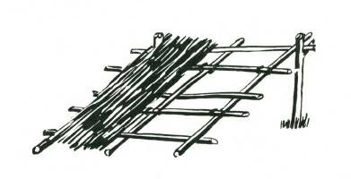
And finally, you will want to be prepared against a spell of wet weather, and so you’ll need a small woodshed. Only then will there be a supply of dry kindling and wood after heavy rain.
The ground dimensions of your woodshed should be at least three feet by four, and about three feet high at the front. It should be to windward of your fireplace, so that windblown sparks will not fall on dry bark or other tinder.
LIGHTING FIRE WITHOUT MATCHES
DIRECT FLAME, using sugar and permanganate of potash crystals, probably carried in the first-aid kit) mix together, and place in a hollow cut in a piece of dry wood. This hollow must be big enough to hold the whole of the dry mixture. Round off a straight stick, about 3/8 to ½” thick and 12” long to a shallow
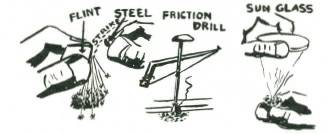
point. Place this end of the stick in the powder and rotate the stick rapidly between the two hands. The mixture will burst into a slow flame. Several attempts may be necessary to obtain ignition. This method may not be effective in damp or cold weather.
S PARK
Iron, iron pyrites and steel used with flint and also some of the very hard stones such as quartz will strike a strong spark, from which it is possible to get a spark for fire. The vital spark for firemaking may also be obtained by friction using a drill and bow, by a magnifying glass which concentrates the sun’s rays, and by compression of air, which concentrates the heat. In the sequence of fire lighting without matches the first step is to get the spark, then from the spark to a coal and lastly from a coal to flame. The spark must be taken onto a tinder, and therefore the preparation of the tinder is a highly important part of firemaking.
TINDERS AND THEIR PREPARATION
The principle required from a tinder is that it must be readily combustible and finely fibred.
A simple test of natural, that is unprepared, tinder should be made to discover which materials are suitable. To make the test take a loosely teased handful of the material, place a coal from the fireplace in the material and blow. If the fire from the coal extends to the tinders it can be regarded as suitable.
Natural tinders are generally found in dry, beaten grass, finely teased bark, and palm fibre. M ost of these coarse tinders are improved in their ability to take and hold a spark by being beaten and pounded until the fibres are fine and soft.
Natural fire-catching properties of tinders can be improved by the addition of a light dusting of very finely ground charcoal or, better still, by being thoroughly scorched.
If saltpetre is available a little may be mixed with the charcoal before it is added to the tinder, or the tinder itself can be soaked in a solution of saltpetre and water and allowed to dry out before use.
Tinder impregnated with a solution of saltpetre and later dried must be carried in an airtight container. If carried otherwise the saltpetre will become damp with moisture from the air. With this, or other prepared tinders you always have an emergency means of getting fire.
Old cotton or linen rag, scorched black and teased, is among the best of all tinders. A pinch of this, placed where the spark will fall, is certain to take the spark and quickly become a glowing coal.
Usine these tinders, lighting fire from spark is comparatively easy.
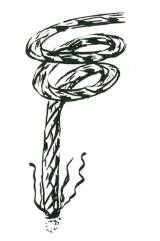
Note. You will discover that some of the soft inner barks, teased and spun into cord, will smoulder slowly when lighted. This is called a 'slow match.’ It is worth while identifying the plants whose bark have this property. Lengths of cord made from such bark can be used to maintain a 'coal’ for a long length of time, and so save your precious matches.

Striking fire from iron pyrites or quartz.
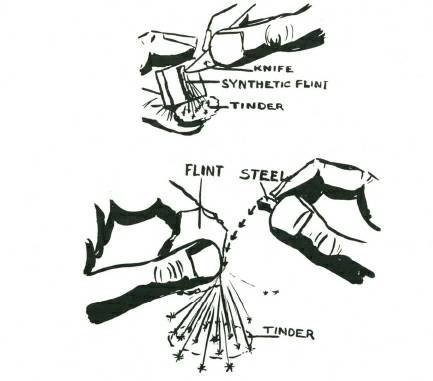
How to strike fire from flint and steel onto tinder.
S TRIKING A S PARK
Flint and steel, of course, were the common method of lighting a fire before friction matches were perfected and no great skill is needed for their use. The svnthetic flint used in a cigarette lighter is a considerable improvement on natural flint. A couple of pieces of synthetic flint pressed into a small piece of 'perspex’ make an excellent emergency firelighting outfit (heat the perspex and press the flints in while it is hot. Hold under cold water and the perspex will shrink on the flints and hold them securely).
An alternative to flint and steel are two pieces of iron pyrites, which, when struck together, throw off a shower of hot sparks that will last for at least a second. Iron pyrites is a common crystalline formation, and not difficult to obtain. Iron pyrites and steel will also give a hot spark. Quartz and steel, or two pieces of quartz, will also strike off good sparks, but these latter stones are very much harder to use.
The sparks struck must fall on the tinder, which, in turn, must be blown into a coal, and from the coal to a flame. Only a pinch of tinder is required when you are proficient with striking a spark.
FIRE BY FRICTION
Firelighting by friction consists first in generating a spark or tiny coal, and then nursing this (in the tinder) to flame.
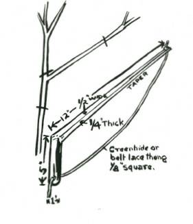
Bow. Thong is made from a leather lace or a strip of greenhide belt lacing.
Firelighting by friction is most easily mastered by the rotation of a drill or spindle in a foot piece. The drill, with some native people, is rotated between the hands but this requires considerable skill. Other primitive people rotated the spindle by means of a


bow and thong. This last is the easiest method. The components, which should be prepared beforehand, are a bow, headpiece, drill, and footpiece. The dimensions given below are a guide for size.
To use a fireset, the drill is put under the thong, and twisted so that the drill finally is on the outer side of the thong, and with that portion of the thong nearest the handle of the bow on the upper side of the drill. This is important.
This is how the thong must be round the drill. If the thong is wrong way on the drill it will cross over itself and cut in a few strokes, also the full length of the stroke cannot be obtained.

The foot piece has a shallow hole cut with a knife point into the upper side about half an inch from one edge. In this hole the drill is rotated. Into the edge of this hole from the nearest side, an undercut V is made.’This should be at least one-eighth inch into the hole itself.
The underside of the headpiece has a shallow hole bored into it, and this is lubricated preferably with lead (graphite) from a pencil.
A smear of fat will also serve as a lubricant, or if even this is not obtainable, wax from the ear can be used.
The correct body position for using the bow.and drill is to kneel on the right knee, with the ball of the’ left foot on the footpiece to hold it firmly to the ground. Place the lower end of the drill in the hole in the footpiece, and the top end of the drill in the hole in the underside of the headpiece.
The left hand holds the headpiece. The wrist of the left hand

must be braced against the shin of the left leg. This will enable you to hold the headpiece perfectly steady. Actually the headpiece is a
'bearing’ for the drill.
The bow is held in the right hand with the little and third finger outside the thong so that by squeezing these two fingers the tension of the thong can be increased.
The correct position to hold the various parts of the fireset.
To learn to use a firebow it is advisable to learn first to rotate the drill slowly. This is done by drawing the bow backwards and forwards. The thong round the drill will spin the drill. Only a light pressure is put on the headpiece. Very soon you will see smoke coming from the footpiece, and notice that a fine brown powder is being ground out. This is forming a dark ring round the edge of the hole. This powder is called 'Punk.’
By examining it you can learn whether the woods you are using are suitable for firemaking.
The punk which will produce a glowing coal must feel slightly gritty when gently rubbed between the fingers, and then with more pressure it should rub gradually to a silky smoothness as soft as face powder.
This testing of the punk is extremely important. If you do not know for certain that the woods you are using are suitable for firelighting always make this test first.
When you consider that you have mastered control of the bow and drill you can start trying to get fire. Place a generous bundle of tinder under the V cut. When the drill is smoking freely and you have the 'punk’ grinding out easily so that the V cut is full of it, put extra pressure on the headpiece and at the same time give twenty or thirty faster strokes with the bow. Lift the drill cleanly and quickly from the footpiece. Fold some of the tinder over lightly and blow gently into the V cut. If you see a blue thread of smoke continuing to rise, you can be sure you have a coal (you will probably see it glowing red). Fold the tinder completely over the footpiece, and continue blowing into the mass. The volume of smoke will increase, and a few quick puffs will make it burst into flame.
A tip given by some authorities is to put a little charcoal or gritty material into the hole in the footpiece. The claim is made that this enables more punk to be ground out, and the spark to be obtained more quickly.
Suitable woods for footpiece and drill, and this writer recommends that the same wood should be used for both parts, includes the willows and some of the non-resinous pines.
There are a few refinements which are worth knowing when you are making firebow set. These include the boring or burning of a hole for the thong at the tip and also through the handle of the bow. The end of thong at the tip of the bow has a thumb knot tied on the top side. The hole through the handle takes the long end of the thong, which is then wound round the handle in a series of half hitches. This hole in the handle enables you to adjust the 'tension’
of the thong with greater accuracy.
A headpiece of shell or smooth grained stone with a hole in it is less liable to 'burn’ than a headpiece of wood. Tinder should be carried in a waterproof bag.
FIRE FROM A MAGNIFYING GLAS S
Almost everyone at some time or other has focused the sun’s rays concentrated by a magnifying glass (sometimes called a burning glass) onto a piece of paper or cloth to make it smoke.
Lighting a fire with a magnifying glass calls for a ball of tinder with an inner core of extra fine material (see 'tinders,’). Onto this inner core the sun’s rays are focused, and when the finer tinder is smoking freely, it simply requires blowing to produce flame. A concave mirror is even better than a magnifying glass. Powdered charcoal at the focal point will help the tinder take more easily.

FIRE BY AIR COMPRES S ION
In parts of Southeast Asia native people make fire by the ingenious method of suddenly compressing air in a cylinder and thereby concentrating the heat in the air to a point when the heat is sufficient to ignite tinder. (They did this hundreds of years before
Dr. Diesel thought of the same idea for his engine.)

Their firemaking sets, frequently a cylinder of bone or hollow bamboo, with a bone or wooden piston, are almost museum pieces today.
In use a small piece of tinder is inserted into a cavity in the lower end of the piston. The piston is placed in the cylinder and the flattened end opposite the piston head struck a smart blow with the palm of the hand, driving it suddenly down the cylinder.
Compression of air with concentration of the heat it carries produces a small glowing coal in the tinder placed in the recess of the piston head.’ Frequently the jar of the blow will shake the tinder loose, so a 'spark remover’ is used with the set to pull out

the glowing tinder if it lodges in the cylinder.
The dimensions are roughly as follows:
Cylinder. 4” to 6” long. Outside diameter ¾” to 1”. Inside diameter about ½”.
Piston. 4” to 6” long, of which the shaft is 3” to 5”. Piston length ¾” to 1”. Diameter–to nicely fit the cylinder.
Recess at lower end of piston-about ¾” wide by ¾“ to 5/16”
deep.
Piston shaft end is smooth and about 1” to 1½” diameter for striking with the palm of the hand.
BUILDING A FIRE
Combustion results when temperature is raised sufficiently high for the material to ignite. This is fire. Fire must have air, and you build your fire differently for different purposes.

FOR COOKING
A cooking fire must be a small fire, and one which is easily controlled. Often you need a 'long’ fire because there are two or three billy cans, a griller and perhaps a frying pan, all of which must be on the fire at the one time.'
Two green logs 6” or 8” thick placed about 12” apart will contain a cooking fire for you and make an excellent overnight fireplace.
A fire for cooking should be 'low,’ with the quick heat of small wood. Too big a cooking fire will mean burnt fingers and burnt food. If the fire is too fierce, you will not be able to attend properly to the cookine of the food. There is a bush saying about cooking fires–'The bigger the fire the bigger the fool.’ When laying a cooking fire ìt is a good plan to put a thicker stick in front of the fire. This will serve to rest your frying pan, and keep the heat from your hands; it will also help to contain the fire within the fireplace.
A cooking; fire should always have a plentiful supply of small wood stacked conveniently near, so that you can feed the fire as the needs of the moment require.

The ideal way to build an open cooking fire.

In very windy or cold conditions it is worth making a reflector fireplace for your cooking. A few green logs placed as a windbreak to the windward side of your fire will enable you to do your cooking in comfort.
FIRE IN FLOODED AREAS
Fire can be made in areas totally covered with flood waters.
The essential is to build a small platform above water level and on this light your fire.
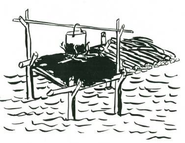
The easiest way to do this is to cut four forked stakes. These must be straight along the line of drive with the fork projecting;
from the side. They must be long enough for the fork to be about 6 to 12 inches above the level of water after the stakes are driven into the ground.
Across the forks at either end two cross sticks are laid, and on these two sticks a platform of other sticks is placed, side by side.
These are covered with a couple of inches of mud, and on this the fire is built.
By extending the platform a foot or two at one end, you have a storage place for your firewood.
FIRE FOR WARMTH
If sleeping out without sleeping; bags or any bedding, select the site for your fire against a dead log. (But make sure the log is not a hiding place for snakes.) Rarely will a single log, burn by itself unless there is a strong draught blowing onto it; therefore you must feed the fire with at least one other log. This can be done by selecting a solid, fairly long log, eight or nine inches through if possible and six or seven feet long. By pushing the end of this against the bigger log where you have built your fire, you will ensure continued burning, and as the smaller log burns down during the night you can simply push it against the big log, and the fire will take fresh heart. An alternative is to lay your logs like a star, and push the ends together during the night.
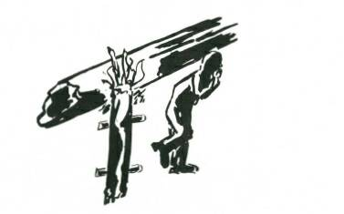

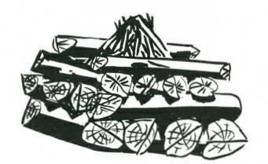
A small log pushed against a dead fallen tree will give you a good overnight sleeping fire. But be sure to put it out in the morning!
THE BUILDING OF A CAMP FIRE
Solid Fire. Pyramid fire, lit on top.
This is the best of all campfires. Three or four logs about 3 ft.
to 5 ft. long are laid side by side and across them another layer with, if you desire it, a third layer on top of these. On top of the top layer the starting fire is laid. This is built up finally like a small pyramid. This type of fire is lit at the top. The starter fire ignites the logs below with falling coals and so this fire burns downwards.

It radiates heat evenly all round, and requires no attention during the night. Also, because there is no falling in of the fire the risk of sparks spreading and starting a bushfire is greatly minimised.
A common mistake in building a campfire is to make a 'pigsty’
construction with heavy logs, on the outside and then pack the inside with light brushwood. Such fires are rarely a success. The light inside wood burns out in a quick blaze of glory, but the heavy outer logs lack sufficient heat to get them properly alight, and also having only small points of contact with each other at the corners do not burn well nor do such fires give out a good radiation of heat.
If the 'pigsty' method is to be used, the top two layers should be completely across the top, one layer going in one direction and the other layer crossing it. These top two layers, when alight, get plenty of air from underneath after the brushwood has burnt out and the heat generated will be reflected downwards, giving better radiation than with a simple 'pigsty’ construction.

Pigsty fire properly built.
Cone fire.
A good camp fire is built if the wood is standing end on, and the fire is built like a pyramid or cone. The centre is fired, and as the core burns away the outside logs fall inwards, constantly feeding the heart of the fire. This type of fire gives good radiation and even with wet wood burns well.
S LOW MATCH
A slow match is a length of rope or cord which hangs in a smouldering condition to give fire when wanted. (Breech loading guns were fired by touching off the priming with a slow match.)
Today the slow match principle is used by many primitive people as a means of preserving fire and also as a means of carrying it from place to place.
A slow match can be made by making a length of cord or thin rope (from 1/8-inch to ¼-inch diameter) from suitable barks or palm fibres.
M ost of the 'silky’ soft-fibred barks are ideal. When one end is put in fire or against a glowing coal it will take and hold the spark, smouldering slowly.
A slow match is a safe way when you have no matches or firelighting material, to preserve the vital spark for further use after you have doused your fire and left camp for an hour or two. For such a use the slow match should be hung from a branch and exposed to the currents of air.
FIRE IN WET WEATHER
The inclusion in your camp gear of firemaking aids such as a few M eta (dried alcohol) tablets is a matter of foresight which you will appreciate if you are overtaken by very bad weather.

Kerosene-soaked Bandages
One of the really useful fire aids is a kerosene-soaked bandage.
The kerosene does not affect the bandage–rather it acts as an antiseptic and helps keep the bandage sterile, and, if need arises, the kerosene-soaked bandage can be used to start a fire in very wet weather.
The best way is to pour kerosene into the roll of bandage until the roll is thoroughly saturated, but not to excess, or the 'dripping’
stage. The bandage can then be put back again into the first-aid kit.
FIRE PRECAUTIONS
Observe these campfire rules and you will never start a bush fire.


NEVER LIGHT A FIRE AT THE FOOT OF A
STANDING TREE OR TREE STUMP.
NEVER LIGHT A FIRE YOU CANNOT PUT OUT.
NEVER LEAVE A FIRE BURNING WHEN YOU LEAVE
CAMP.

ALWAYS CLEAR AN AREA THREE FEET WIDE
AROUND YOUR FIREPLACE.
Whenever possible, enclose your fire, either with stones, by using a pit fireplace, or by using a couple of green logs.
BUS HFIRE FIGHTING
There are two main types of bushfires. M ost frequent is a
'ground’ fire in which the fire sweeps along the ground and lower growth, feeding upon the fallen leaves and grass and shrubs. The other type is a 'Tops’ or true 'forest’ fire, in which the fire sweeps along the tree tops, the leaves of which, because of the intense heat, are rendered highly inflammable. Forest fires move with great speed, and because of terrific air currents which they generate,
'jump’ considerable distances.
M ost bush fires start as ground fires. When the weather is dry and hot, a ground fire can quickly grow to a forest fire in heavilytimbered country.
GROUND FIRES
A ground fire can be fought either by beating it out or by making a fire break. SYS
If the fire is purely a grass fire, use a green leafy branch to attack the fire by beating the burning edge back towards the burnt portion. When bush and low scrub are alight you may be able to beat the fire out with the green branch, but if possible a length of sacking, thoroughly soaked, will prove a more efficient beater.
Beating out an extensive grass or scrub fire can be hard and difficult work.
If the fire extends along a wide front, too wide for you to attack, or if it is fanned by too high a wind, your best defence is to burn a firebreak between you and the approaching fire.
Select the line for the firebreak where the grass or scrub is thinnest and fire a small area–beating the young fire out on the side farthest from the approaching fire so that it will move away from you towards the main fire.
In the draught created by the heated air, the fire along your firebreak will advance against the wind, feeding upon the inflammable material in its path.
Extend your firebreak in a wide semicircle round the bushfire side of your camp and when the approaching fire reaches the ends of your firebreak be ready to attack it if it starts to burn back against the wind.
Water, if available, can be used to fight a bushfire by playing a jet of water at the heart of the fire. The effect of water on burning wood is to reduce the temperature below combustion point.
FORES T FIRES
There is little that one or two people without firefighting equipment can do against a forest fire. The only really effective way to fight such a fire is by the cutting of firebreaks 100 to 200 yards wide–and this is impossible at short notice.
If a forest fire is approaching, the only safe place to take refuge is in a waterhole. It is no use trying to escape by running away from the fire. M en galloping in front of a forest fire on fearmaddened horses have been overtaken by the racing flames, which, in minutes, have killed both horse and rider.
WATER MUS T NOT BE US ED ON OIL FIRES
If water is played on burning oil or fat the water particles are exploded and the oxygen and hydrogen of the water feed the fire, increasing its intensity and spreading the danger.
The only way to fight an oil fire is to seal the fire off from the air.
On one occasion the writer saw a forty-gallon drum of high octane petrol catch fire. It was one of a store of several thousand full drums. Everybody panicked and ran for cover except one man, who calmly walked over to the blazing drum, picked up a plug and sealed the opening. The fire went out immediately the air was cut off.
To fight an oil fire, throw sand or dirt on the seat, of the firethat will seal off the air and the fire will die in a few moments.
This particularly applies to the danger of frying pans, where the hot fat catches fire–never ever throw water in the pan. Place it in a safe place where the fire can die down or throw dirt or sand or flour on the blaze.
FIRE ON CLOTHING
When clothing catches fire there is a tendency to panic and run.
Keep calm–beat the fire out with the hands or roll in the dirt.
Better still, grab a blanket or rug and roll in it. You may feel painful skin burns, but if you run, the air will feed the burning clothing and you may be so badly burnt that you will lose your life.
WATER AND OIL FIRE
One of the hottest, most intense fires you can make is to burn water and oil together.
About the easiest method is to place a steel or iron plate on a couple of stones a foot above ground level. Light a fire beneath this plate to make it really hot and while it is heating up arrange a pipe or narrow trough about two or three feet long. One end of this pipe or trough is over the centre of the plate, and the other end is a foot or so higher than the plate. Into this top end of the pipe arrange,

by means of a funnel and trough, water and sump oil to be fed down the pipe to the hot plate. The proportion of flow is two or three drops of water to one drop of oil. When the water and oil fall onto the hot plate it burns with a hot white flame of very great heat. The rate of flow can be governed by cutting a channel in corks which plug the bottles holding the water and oil, or if tins are used, piece holes in the bottoms of the tins and use a plug to control the flow.
This type of fire is excellent for an incinerator when great heat is required to burn out rubbish. It also makes an excellent
'Campfire’ where strong flame and light are required and wood is in short supply.
CHAPTER 6
KNOTS AND LASHINGS
THE ability to join two pieces of natural material together, and so increase their length, gives man the ability to make full use of many natural materials found locally.
Sailors probably did more to develop order in the tying of knots, because for them it was necessary not only to tie securely but also to be able to untie, often in the dark and under conditions of bad weather and with rain-tightened ropes.
In bushcraft work probably half a dozen knots would suffice, but knots and knotting have a fascination for many people the world over, and a comprehensive range of knots, plain and fancy, and, with these, splices, whipping, plaits, and net making are included in this book with information of general use.
Knot tying is a useful exercise to obtain better coordination between eyes and fingers. The identification of knots by feel is an excellent means of developing recognition through touch.
In all woodcraft work it is necessary to know how to tie knots which will hold securely and yet can be untied easily. M any of the materials which you will have to use will be green, some will be slippery with sap, and there are many little tricks and knacks to
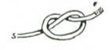
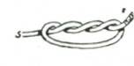
get the best possible use from the materials available.
Knots and lashings take the place of nails for much bushwork, and when it comes to traps and snares, a thorough knowledge of all running knots is essential.
A brief description of the use to which the knot may be put is given in this book. The diagrams will explain how the knot is tied.
The letter “F” means the free or untied end of the rope, and the letter “S” means the standing or secured end.
KNOTS FOR ROPE ENDS OR FOR GRIPS ON THIN ROPE
THUM B KNOT
To make a stop on a rope end, to prevent the end from fraying or to stop the rope slipping through a sheave, etc.
OVERHAND KNOT
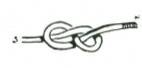

Overhand knot may be put to the same use as the thumb knot.
It makes a better grip knot, and is easy to undo.
FIGURE EIGHT
This knot is used as the thumb knot. Is easy to undo, and more ornamental.
KNOTS FOR JOINING ROPES
SHEET BEND
To join or bend two ropes of unequal thickness together. The thicker rope is the bend.
DOUBLE SHEET BEND
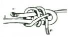

Similar to single sheet bend, but gives greater security, also useful for joining wet ropes.
CROSSOVER SHEET BEND
This holds more securely than either the single or double sheet bend and has occasional real uses such as fastening the eye of a flag to its halyard where the flapping might undo the double sheet bend.
REEF KNOT

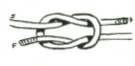
To securely join two ropes of equal thickness together. Notice the difference in position of the free and standing ends between this and the thief knot.
THIEF KNOT
To tie two ropes of equal thickness together so that they will appear to be tied with a reef knot, and will be retied with a true reef knot. This knot was often used by sailors to tie their sea chests, hence the name.
CARRICK BEND
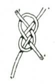

This bend is for the secure fastening of two ropes of even thickness together. It is particularly suitable for hawsers and steel cables. It can be readily undone and does not jam, as do many other bends and knots.
STOPPER HITCH
To fasten a rope to another rope (or to a spar) on which there is already a strain. When the hitch is pulled tight the attached rope